Bring Me The Horizon: Эволюция Звука и Визуальный Хаос
Группа Bring Me The Horizon (BMTH) возникла в Шеффилде, Англия, в 2004 году, когда пятеро подростков — Оливер Сайкс, Ли Малиа, Мэтт Кин, Мэтт Николлс и Кертис Уорд — решили играть музыку, вдохновленную американским металкором. Название, взятое из финальной фразы фильма «Пираты Карибского моря» («Now... bring me that horizon»), стало символом их амбиций. Первые годы ознаменовались скандальной репутацией из-за буйных концертов и текстов, но именно сырая агрессия дебютного альбома Count Your Blessings (2006) привлекла к ним внимание андеграунда, хотя критики тотчас наклеили ярлык «мошенников» от deathcore.
Архитекторы Звука: Участники Коллектива
Oli Sykes — вокал
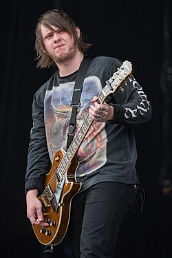
Lee Malia — гитара
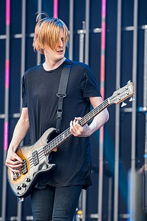
Matt Kean — бас
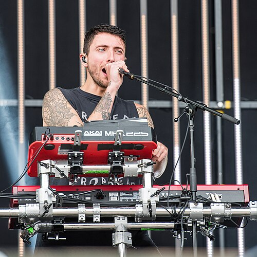
Jordan Fish — клавиши
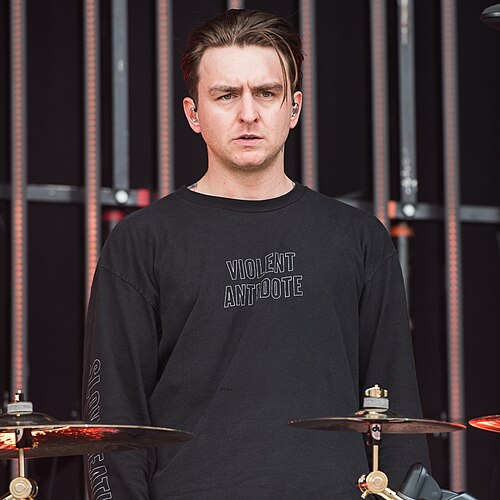
Matt Nicholls — барабаны
Дискография: От Deathcore до Post Human
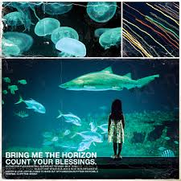
Count Your Blessings (2006)
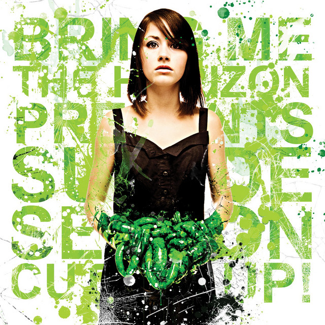
Suicide Season (2008)
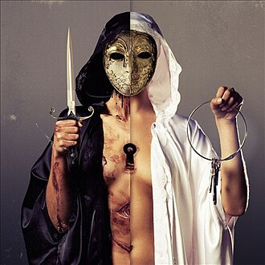
There Is a Hell... (2010)
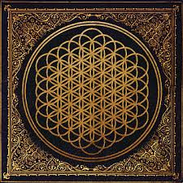
Sempiternal (2013)
That’s the Spirit (2015)
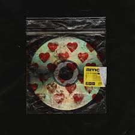
Amo (2019)
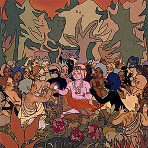
Post Human: Survival Horror (2020)
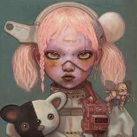
Post Human: Next Gen (2024)
История: Путь через Тернии
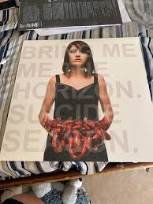
Эпоха становления и Suicide Season (2008–2010): Поворотным моментом в карьере BMTH стал уход гитариста Кертиса Уорда и выпуск второго альбома Suicide Season. Вместо того чтобы повторять примитивный брейкдаун-хаотичный deathcore, группа резко расширила звучание: добавила электронные сэмплы, атмосферные мелодии и тексты, исследующие личную боль Оливера Сайкса (включая тему зависимости). Именно с этого альбома BMTH перестали быть «еще одной металкор-группой», начав привлекать поклонников эмо и пост-хардкора. Хиты, такие как «Chelsea Smile» и «The Sadness Will Never End», закрепили их статус восходящих звёзд британской тяжелой сцены, несмотря на перманентные проблемы Сайкса с наркотиками и голосовыми связками.
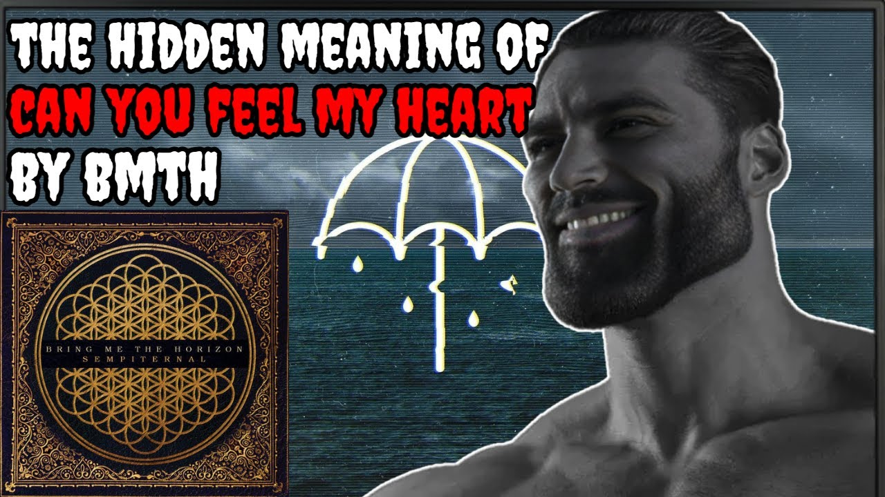
Прорыв в мейнстрим и Sempiternal (2013): Настоящий прорыв случился с альбомом Sempiternal (2013), который считается их «темным шедевром». Приглашение клавишника Джордана Фиша перевернуло всё: в музыку органично вплели дабстеп-синтезаторы, эмбиент и даже элементы поп-музыки, сохранив при этом жёсткие риффы. Этот альбом с песнями «Can You Feel My Heart» (ставшей интернет-мемом спустя десятилетие) и «Shadow Moses» поднял группу на вершину хит-парадов, выведя её на стадионный уровень. Интересно, что Оливер Сайкс к тому моменту прошёл реабилитацию, бросил кетамин и алкоголь, и его новая лирика о борьбе с депрессией и поиске смысла («Hospital for Souls») нашла отклик у миллионов слушателей далеко за пределами метал-сообщества.
Эксперименты с поп-роком и эра Post Human (2019–наши дни): Последующие альбомы (That's The Spirit, 2015; Amo, 2019) шокировали пуристов: BMTH почти отказались от экстрим-вокала в пользу синти-рока, поп-продюсирования и даже элементов EDM. Сингл «Mantra» звучал как Queen, встреченные с Daft Punk, а трек «Medicine» мог бы крутиться на Top 40 радио. Однако группа доказала свою уникальную гибкость: в разгар пандемии они запустили проект Post Human, где первый же EP — Survival Horror (2020) — вернул яростные брейкдауны и дуэли с такими гостями, как Эми Ли из Evanescence и Babymetal. Эта серия мини-альбомов позволила им существовать во всех жанрах одновременно. Сегодня Bring Me The Horizon — не просто метал-группа, а мультиформатный феномен, который возглавляет фестивали (Download, Glastonbury) и держит в напряжении как старых фанатов, так и новое поколение, доказывая, что правило успеха — не бояться сжигать собственные шаблоны.